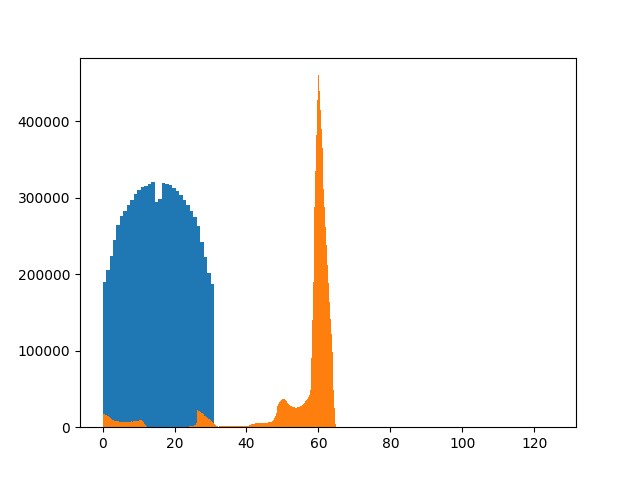
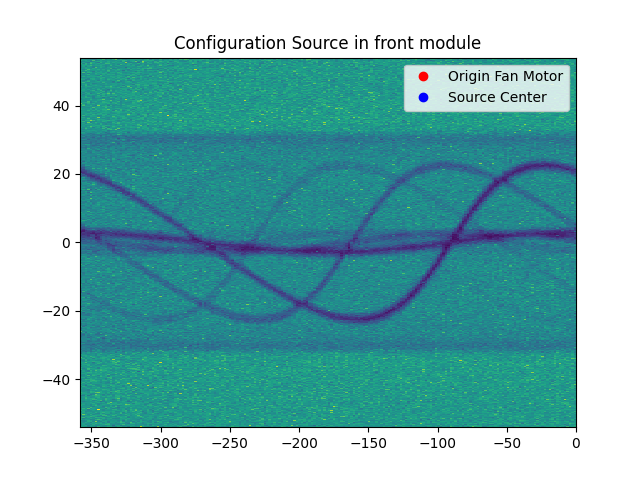

Note
Go to the end to download the full example code.
TOR FILE#
This is an example how to create a TOR file for easyPETCT The file should be run one time to each new acquisition
- 
- 
2.0.2
C:\Users\pedro\anaconda3\envs\test_env_spect\lib\site-packages\numpy\__init__.py
<Geometry.easyPETBased.easyct_parametric_points.EasyCTGeometry object at 0x00000241D8FA81C0>
Field: ENERGYA
...............................
Mean: 0.0
Std: 0.0
Range: 0.0 to 0.0
Median: 0.0
Min diff: None
Number of unique values: 1
-------------------------------
Field: ENERGYB
...............................
Mean: 55.3545
Std: 13.6874
Range: 2e-05 to 125.29936
Median: 59.97403
Min diff: 0.0001
Number of unique values: 465749
-------------------------------
Field: IDA
...............................
Mean: 0.0
Std: 0.0
Range: 0.0 to 0.0
Median: 0.0
Min diff: None
Number of unique values: 1
-------------------------------
Field: IDB
...............................
Mean: 15.479
Std: 8.623
Range: 0.0 to 31.0
Median: 15.0
Min diff: 1.0
Number of unique values: 32
-------------------------------
Field: AXIAL_MOTOR
...............................
Mean: -179.4862
Std: 104.0901
Range: -358.20001 to -0.0
Median: -180.0
Min diff: 1.8
Number of unique values: 200
-------------------------------
Field: FAN_MOTOR
...............................
Mean: -0.0203
Std: 32.7272
Range: -54.0 to 54.0
Median: 0.0
Min diff: 0.225
Number of unique values: 481
-------------------------------
Field: TIME
...............................
Mean: 1203.3042
Std: 694.2908
Range: 0.00028 to 2404.99293
Median: 1204.52752
Min diff: 0.0001
Number of unique values: 7122705
-------------------------------
Number of events: 8884639
Number of events per second: 3694.2474519394295
Number of events per frame per second: [np.float64(3989.3916972420348), np.float64(4357.291575446141), np.float64(3095.0522156673755), np.float64(3489.2407769029724)]
Number of motors: 2
Global detector ID not set. Automatically setting is going to run. Note that incomplete data could set a wrong global ID leading to incorrect reconstruction
Number of motors detected: 2
AXIAL_MOTOR step 1.7999999999999545
AXIAL_MOTOR range 200
FAN_MOTOR step 0.22499999999999432
FAN_MOTOR range 481
IDA number of detectors 1
IDB number of detectors 32
GlobalID_maximum: 3078399
GlobalID_minimum: 0
Expected GlobalID maximum: 3078400
Reading file: C:\Users\pedro\OneDrive\Ambiente de Trabalho\all_values.tor
<Geometry.easyPETBased.easyct_parametric_points.EasyCTGeometry object at 0x000002419E5633A0>
Calculating source position for all events detected...
import os
import numpy as np
import matplotlib.pyplot as plt
import uuid
import time
from TORFilesReader import ToRFile, AnimalType, PhantomType, AcquisitionInfo, ListModeBody, RadioisotopeInfo, Technician
from Device import StoreDeviceInFo
from Phantoms import NEMAIQ2008NU
print(np.__version__)
print(np.__file__)
# filename = "../../allvalues.npy"
filename = "C:\\Users\\pedro\\OneDrive\\Ambiente de Trabalho\\intelligent_scan-NewGeometries-CT\\allvalues.npy"
# filename = "C:\\Users\\pedro\\OneDrive\\Ambiente de Trabalho\\listmode_whitescan_32x1.npy"
output_path = "C:\\Users\\pedro\\OneDrive\\Ambiente de Trabalho\\all_values.tor"
# output_path = "C:\\Users\\pedro\\OneDrive\\Ambiente de Trabalho\\listmode_whitescan_32x1 (1).tor"
#
# if not os.path.exists(output_path):
# os.makedirs(output_path)
device_path = "C:\\Users\\pedro\\OneDrive\\Documentos\\GitHub\\Infinity-Tomographic-Reconstruction\\configurations\\08d98d7f-a3c1-4cdf-a037-54655c7bdbb7_EasyCT"
getDevice = StoreDeviceInFo(device_directory=device_path)
newDevice = getDevice.readDeviceFromDirectory()
print(newDevice)
#-----------------------------------------
# create listMode
# IF Animal
# subject = AnimalType()
# subject.setHealthy(True)
# ....
# IF Phantom
subject = PhantomType()
subject.setPhantomName("NEMA IQ 2008 NU")
subject.setPhantomPurpose("Calibration")
subject.setPhantomDescription("NEMA IQ 2008 NU phantom for calibration")
subject.setDigitalPhantomCopy(NEMAIQ2008NU())
# If PET/SPECT/COMPTON
radioisotope = RadioisotopeInfo()
radioisotope.setTracers(["18F"])
radioisotope.setHalfLifes([float(109.771 * 60) ])
radioisotope.setDecayTypes(["BetaPlus"])
radioisotope.setDecayEnergies([511])
# Tecnhician
tecnhician = Technician()
tecnhician.setName("Pedro Encarnação")
tecnhician.setRole("Researcher")
tecnhician.setOrganization("Universidade de Aveiro")
scanHeader = AcquisitionInfo()
scanHeader.setId(1)
scanHeader.setScanType("CT")
scanHeader.setIndexesOfFrames([0, 1000, 2000, 3000, 4000])
scanHeader.setSubject(subject)
scanHeader.setTecnhician(tecnhician)
# scanHeader.setNumberOfFrames(1)
scanHeader.setInstanceUID(str(uuid.uuid4()))
scanHeader.setStudyInstanceUID(str(uuid.uuid4()))
scanHeader.setFrameOfReferenceUID(str(uuid.uuid4()))
scanHeader.setDate(time.strftime("%Y-%m-%d %H:%M:%S"))
# IF PET/SPECT/COMPTON
# scanHeader.setRadioisotope(radioisotope)
listmode = np.load(filename)
listmode[:,3] = np.copy(listmode[:,2])# invert ID_A and ID_B
listmode[:,2] = 0
listmode[:,1] = np.copy(listmode[:,0]) * 1000
listmode[:,0] = 0
listModeBody = ListModeBody()
listModeBody.setListmode(listmode)
listModeBody.setListmodeFields(["ENERGYA", "ENERGYB", "IDA", "IDB", "AXIAL_MOTOR", "FAN_MOTOR", "TIME"])
listModeBody.setFrameStartIndexes(scanHeader.indexesOfFrames)
listModeBody.generateStatistics()
listModeBody.printStatistics()
listModeBody.setGlobalDetectorID()
listModeBody.setCountsPerGlobalID()
plt.figure()
plt.hist(listModeBody["IDB"], bins=32)
plt.show()
ToRFile_creator = ToRFile(filepath=output_path)
ToRFile_creator.setSystemInfo(newDevice)
ToRFile_creator.setAcquisitionInfo(scanHeader)
ToRFile_creator.setfileBodyData(listModeBody)
ToRFile_creator.write()
#######CHECK TESTS###################
#######UNCOMMENT TO CHECK FILE AND GEOMETRY INTEGRATY############
ToRFile_reader = ToRFile(filepath=output_path)
ToRFile_reader.read()
listModeBody_read = ToRFile_reader.fileBodyData
plt.hist(listModeBody_read["ENERGYB"], bins=500)
plt.figure()
plt.hist2d(listModeBody_read["AXIAL_MOTOR"], listModeBody_read["FAN_MOTOR"],
bins=(listModeBody_read.uniqueValuesCount[4], listModeBody_read.uniqueValuesCount[5]))
plt.show()
print(ToRFile_reader.systemInfo)
deviceFromTOR = ToRFile_reader.systemInfo
axial_motor_angles = np.deg2rad(np.arange(0, 360, 45))
fan_motor_angles = np.deg2rad(np.arange(-45, 60, 15))
# repeat the fan motor angles for each axial motor angle
fan_motor_angles = np.repeat(fan_motor_angles, len(axial_motor_angles))
axial_motor_angles = np.tile(axial_motor_angles, len(fan_motor_angles) // len(axial_motor_angles))
deviceFromTOR.sourcePositionAfterMovement(axial_motor_angles, fan_motor_angles)
plt.plot(deviceFromTOR.originSystemWZ[0], deviceFromTOR.originSystemWZ[1], 'ro', label='Origin Fan Motor')
# plot source center
plt.plot(deviceFromTOR.sourceCenter[:, 0], deviceFromTOR.sourceCenter[:, 1], 'bo', label='Source Center')
# plot a line from the origin to the source center at fan motor angle 0
# testSourceDistance(deviceFromTOR.xRayProducer.focalSpotInitialPositionWKSystem, deviceFromTOR.sourceCenter,
# deviceFromTOR.originSystemWZ.T)
index_fan_motor_angle_0 = np.where(fan_motor_angles == 0)
source_center_fan_motor_angle_0 = deviceFromTOR.sourceCenter[index_fan_motor_angle_0]
origin_fan_motor_angle_0 = deviceFromTOR.originSystemWZ.T[index_fan_motor_angle_0]
# plt.plot(origin_fan_motor_angle_0[0], origin_fan_motor_angle_0[1], 'x')
plt.plot(source_center_fan_motor_angle_0[:, 0], source_center_fan_motor_angle_0[:, 1], 'gx')
plt.plot([origin_fan_motor_angle_0[:, 0], source_center_fan_motor_angle_0[:, 0]],
[origin_fan_motor_angle_0[:, 1], source_center_fan_motor_angle_0[:, 1]], '-')
plt.legend()
plt.title("Configuration Source side of detector module A")
plt.title("Configuration Source in front module")
plt.show()
# designer = DeviceDesignerStandalone(device=deviceFromTOR)
# designer.addDevice()
# designer.addxRayProducerSource()
# designer.startRender()
# ToRFile_creator.setAcquisitionInfo(scanHeader)
# ToRFile_creator.setListMode(listmode)
Total running time of the script: (0 minutes 9.424 seconds)